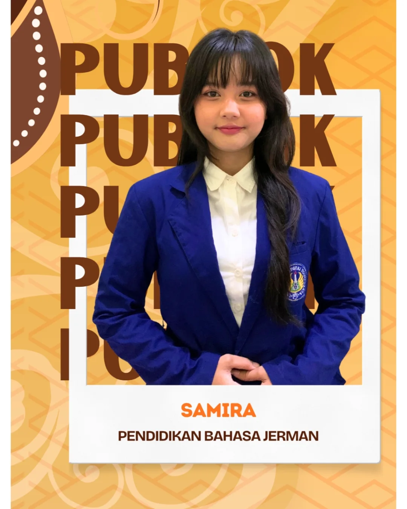
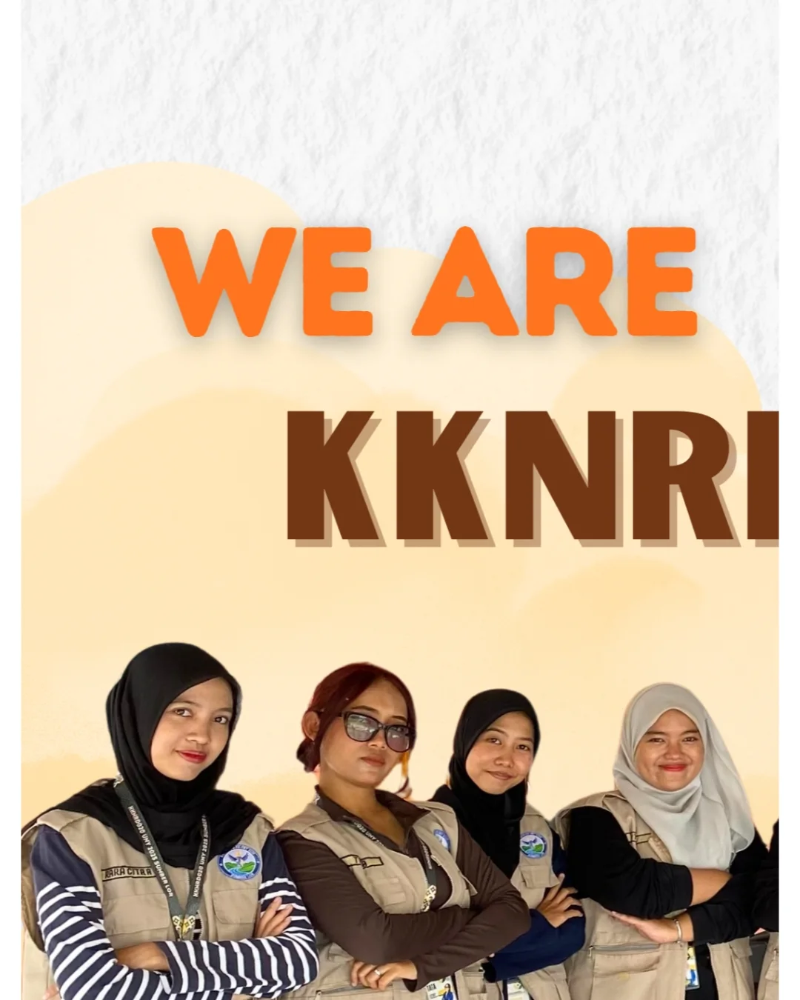
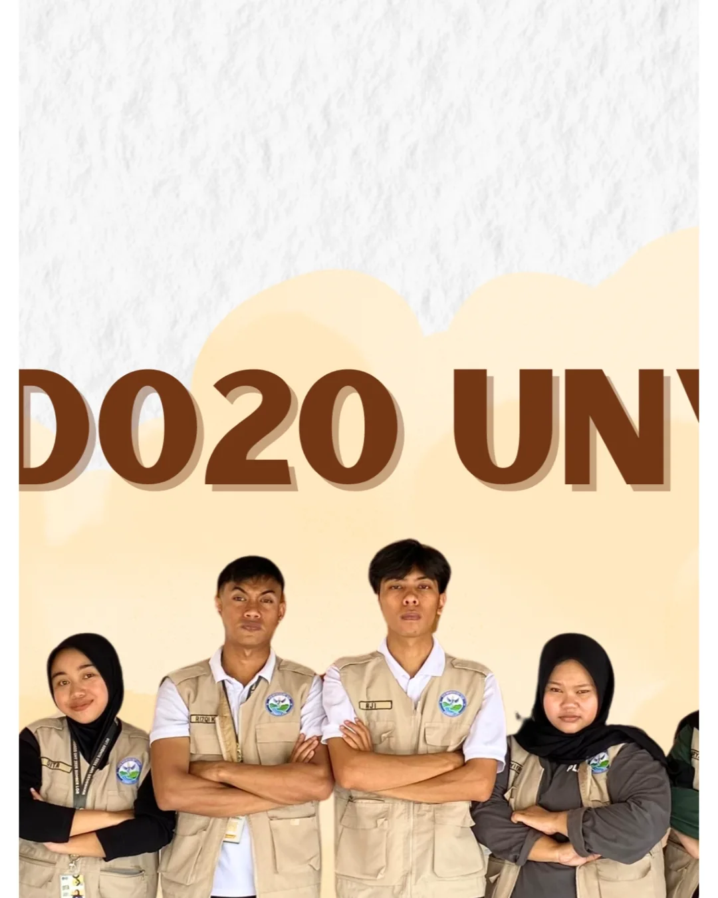
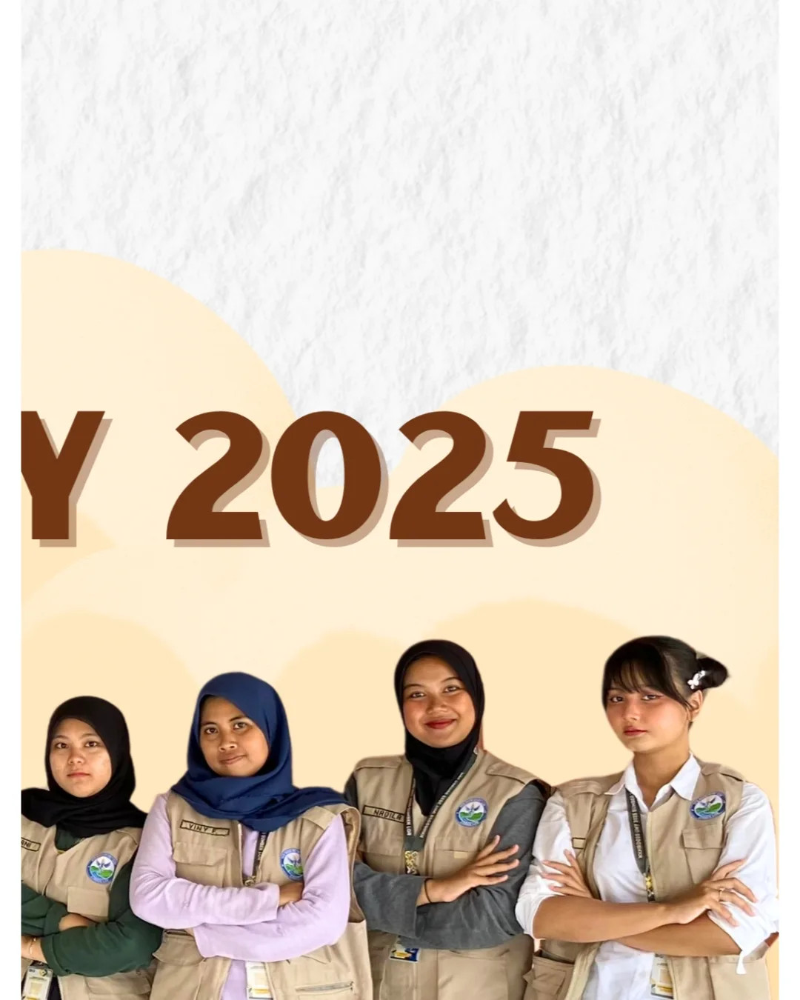

Halo, Saya
German Language Educator · Linguistics Enthusiast · UNY Alumna
Berdedikasi dalam pengajaran bahasa Jerman dan pengembangan media pembelajaran kreatif untuk generasi masa depan.
Halo! Saya Samira, seorang lulusan Pendidikan Bahasa Jerman dari Universitas Negeri Yogyakarta. Sebagai seseorang yang tumbuh dengan kecintaan pada bahasa dan budaya, saya percaya bahwa belajar bahasa bukan hanya soal kata-kata, tapi tentang membuka jendela dunia yang baru.
Saya adalah pribadi yang ceria, komunikatif, dan sangat menikmati proses berbagi ilmu. Dalam mengajar, saya senang menggabungkan metode yang interaktif agar belajar bahasa Jerman terasa lebih seru dan mudah dipahami oleh siapa saja.
Pendidikan Bahasa Jerman
Mempelajari kedalaman makna dan sejarah melalui karya literatur klasik hingga modern.
Fonetik, Sintaksis, dan Semantik Bahasa Jerman
Metode pengajaran modern & inovatif berbasis kurikulum
Kajian budaya dan peradaban Jerman secara mendalam
Kemampuan berkomunikasi, membaca, dan menulis dalam bahasa Jerman setara tingkat menengah atas.
Daily & Academic Conversation — mampu berkomunikasi aktif dalam konteks sehari-hari dan akademis.
Penutur asli dengan penguasaan penuh dalam komunikasi lisan, tulisan, formal, dan informal.
Bertanggung jawab menyusun RPP bahasa Jerman, mengajar langsung di kelas, dan mengembangkan media ajar inovatif yang menarik bagi peserta didik.
Dosen Pembimbing: Dr. Nova Suparmanto, M.Sc.
Berkontribusi dalam pengabdian masyarakat dan pengembangan potensi desa bersama tim KKN-RD 020 UNY di Sumber Lor, Gunung Kidul.




Tertarik untuk berkolaborasi atau sekadar menyapa? Jangan ragu untuk menghubungi saya!